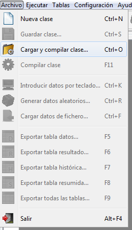
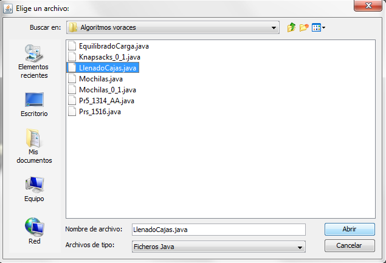
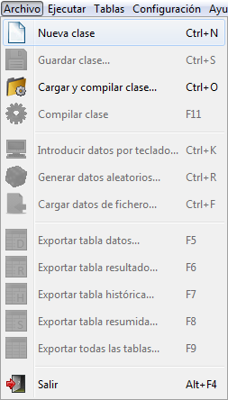
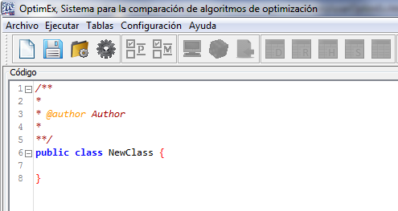
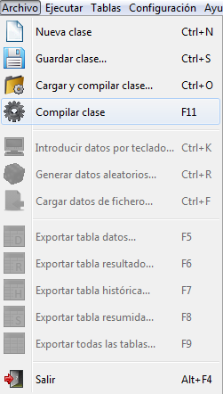
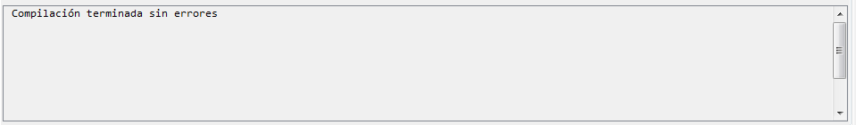
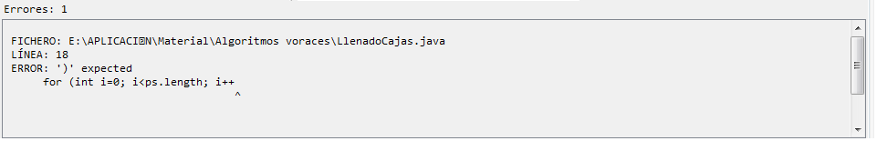

volver
Cargar clase
Cargar clase de fichero
Seleccione desde la barra de menus.

A continuación seleccione el fichero de clase que desea utilizar, y pulse el botón "Abrir".

Nota:
Los archivos de clases son ficheros .java.
Cargar clase nueva
Seleccione desde la barra de menus.

En el panel editor aparecerá una plantilla de clase java:

Guardar clase
Seleccione desde la barra de menus.
A continuación introduzca el nombre del fichero de clase que desea utilizar, y pulse el botón "Guardar":
Nota:
La clase se guarda con la extensión .java.
Compilar clase
Seleccione desde la barra de menus.

A continuación aparecerá el resultado de la compilación.
Si la compilación es correcta:

Si hay errores de compilación:

16 de Septiembre de 2016